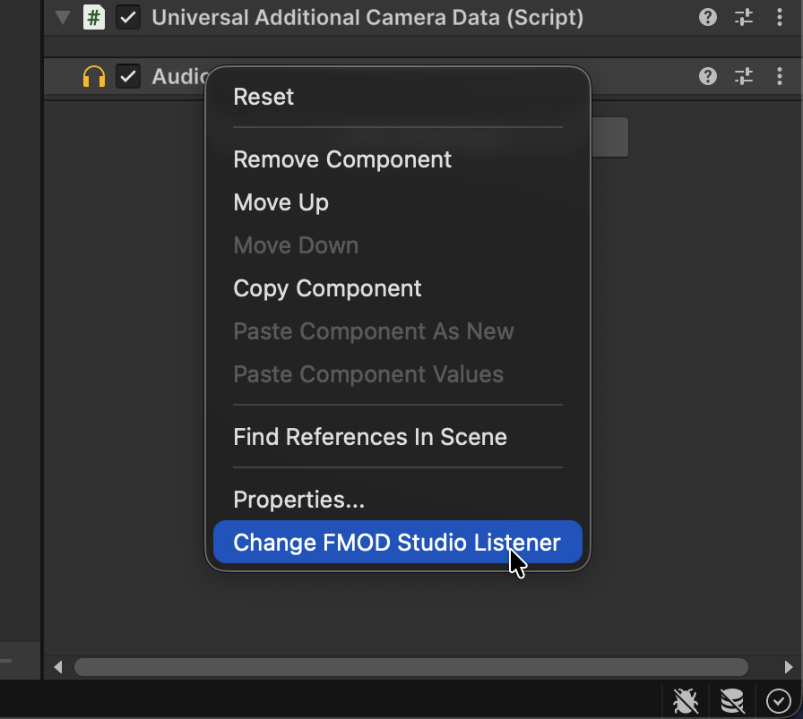
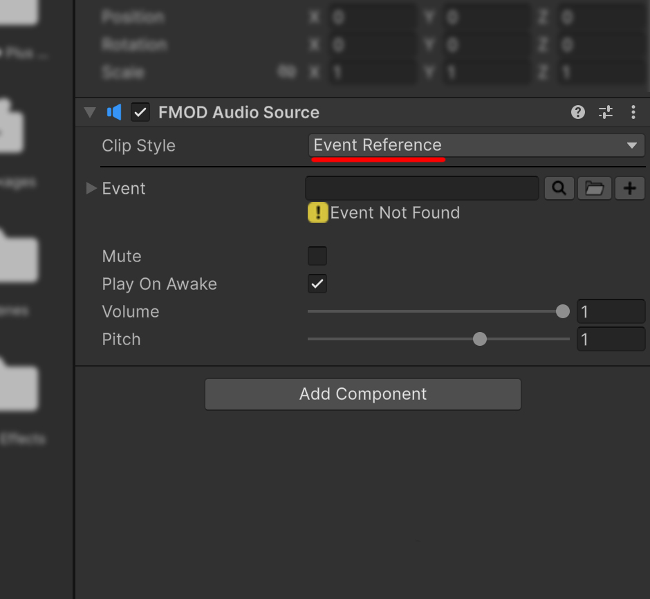
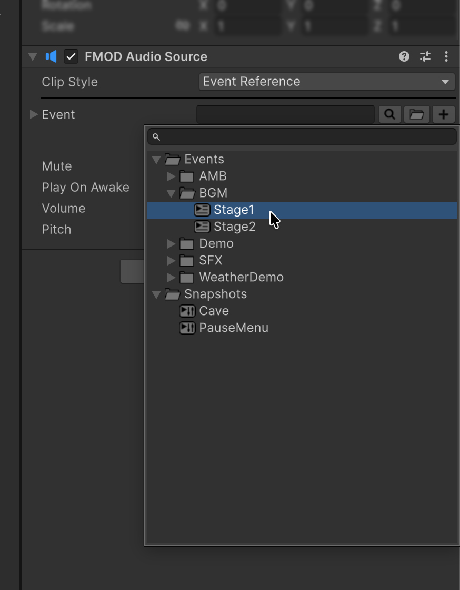
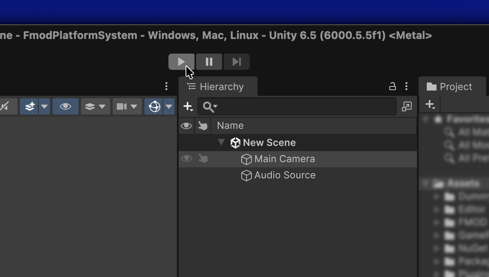

Getting started
1. Verify the installation
Open FMOD > FMOD Plus > Setup and confirm that a supported FMOD for Unity package is active. Resolve the first Console compilation error before adding FMOD Plus components.
2. Verify the listener
Ensure that the camera has an FMOD Studio Listener component attached instead of Unity's default Audio Listener. You can easily replace it by right-clicking the Unity Audio Listener component and selecting Change FMOD Studio Listener.

3. Create an audio source
- Create a GameObject from GameObject > Audio > FMOD > Audio Source. This creates a GameObject with an
FMODAudioSourcecomponent.

- Select the created GameObject and find the
FMODAudioSourcecomponent in the Inspector. - Set Clip Style to Event Reference.

- In Event, select the FMOD Event you want to play.

- Enable Play On Awake.

- Enter Play Mode. The selected Event plays automatically when the GameObject is enabled.

If you cannot hear the Event, confirm that the FMOD banks are available and that the camera has the FMOD Studio Listener configured in step 2.